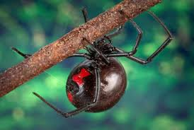

BLACK WIDOW FACTS

Physical Traits
Shiny black body
Red hourglass marking on abdomen
Long, thin legs
Habitat
Warm regions worldwide
Lives in dark sheltered places
Found in woodpiles, sheds, and rocks

Diet
Insects like flies, beetles, mosquitoes
Uses sticky silk webs
Injects venom to digest prey